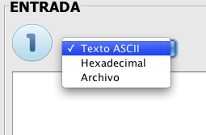
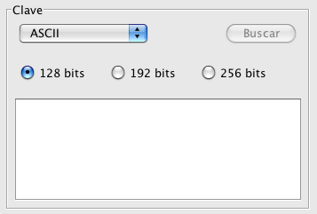
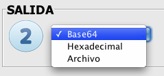
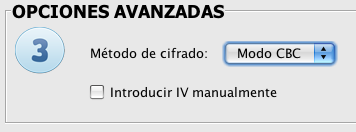
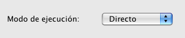

El proceso de cifrado está claramente diferenciado en
tres sencillos pasos.
Entrada y clave.
A la hora de elegir la entrada tenemos tres posibilidades: Texto ASCII, Hexadecimal y Archivo

- Si elegimos la opción de Texto ASCII se habilita el
Área de texto para poder introducir un texto de hasta 1024 caracteres. El texto se rellenará para que el tamaño del mismo coincida con el tamaño de bloque que utiliza la aplicación para cifrar y descifra (este relleno no afectará en ningún momento ni al cifrar ni al descifrar).
- En el caso de elegir la opción hexadecimal se procederá de manera análoga a la anterior, rellenando la entrada únicamente con caracteres hexadecimales ya que la aplicación sólo permite la entrada de caracteres hexadecimales.
- Para el caso de entrada a través de archivo, se habilitará el botón "Buscar", el cual te permite elegir un archivo de entrada. Puede ser cualquier tipo de archivo; tanto un archivo de texto (en cuyo caso se cifrará su contenido), como una imagen, un archivo de sonido, un archivo comprimido, etc. La única limitación es el tamaño del archivo, que es de 40 megabytes, ya que el propósito de esta aplicación es fundamentalmente didáctico, y archivos mayores conllevan un proceso muy largo e incluso llegando a colapsar la pila de Java.

En cuanto a la clave, también nos encontramos ante tres posibilidades, Texto ASCII, Hexadecimal y Archivo (base64).
Hemos de elegir el tamaño que tendrá nuestra clave: 128, 192 ó 256 bits. Este tamaño provocará que el proceso de cifrar tenga más o menos rondas: 10, 12 ó 14 respectivamente.
El número de caracteres a introducir dependerá directamente del tamaño de bits elegido. La aplicación no permite introducir más caracteres del que se expecifiquen. En el caso de que elijamos la opción "Archivo", se nos permitirá buscar un archivo con una clave guardada. Desde el menú archivo podemos guardar y cargar claves para que este procedimiento resulte más cómodo. La clave cargada de archivo en caso de ser menor de los bits marcados, se rellenará para coincidir con el tamaño de bits elegido.
Salida.
Una vez elegida la entrada y la clave, tendremos que elegir el formato de nuestra salida.

La salida puede ser igualmente base64, Hexadecimal y Archivo. De esta elección dependerá el formato de escritura de la salida del cifrado. De elegir salida archivo, se deberá especificar la ruta donde se creará el archivo o bien elegir, mediante el botón "Buscar". Si elegimos un archivo existente, se reemplazará tras el término del cifrado.
Opciones Avanzadas.
Por último, deberemos elegir el método de cifrado y el modo de ejecución.

Mediante el combo de "Método de cifrado" podemos seleccionar si el cifrado se realizará mediante ECB o CBC, que son distintas formas de tratar los bloques de la entrada. De elegir el método CBC, se habilitaría un check para poder introducir el IV (Vector de Inicialización) manualmente, o bien, que se genere aleatoriamente.

Eligiendo si el modo de ejecución es directo o paso a paso, provocaremos que la salida sea directamente la entrada cifrada o bien el resultado de los pasos intermedios del proceso junto con la entrada cifrada respectivamente. Huelga decir que de elegir el modo "paso a paso", el procedimiento tardará más. De elegir salida "Archivo", el modo "paso a paso" sólo mostrará el primer y último bloque en caso de que éste sea demasiado grande.
Desde el menú "Archivo" podremos cargar y guardar claves como comentábamos, y desde el menú "Editar" podremos copiar y pegar los campos que necesitemos.
Pulsando el botón "Siguiente" lanzaremos el proceso.
La aplicación comprobará que se están introduciendo datos correctos en cada campo de la pantalla, avisando al usuario en caso de que tenga que rellenar alguno de ellos o sea incorrecto.
Mediante el botón "Cancelar" volveremos a la pantalla principal de la aplicación
Para una información más detallada y teórica de este proceso consulte los siguientes términos:
Cifrado,Descifrado, AddRoundKey, MixColumns, ShiftRows, SubBytes, Base64, ECB, CBC.